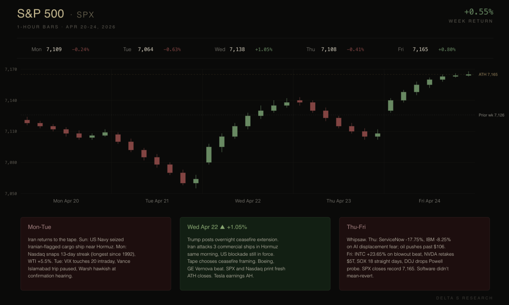
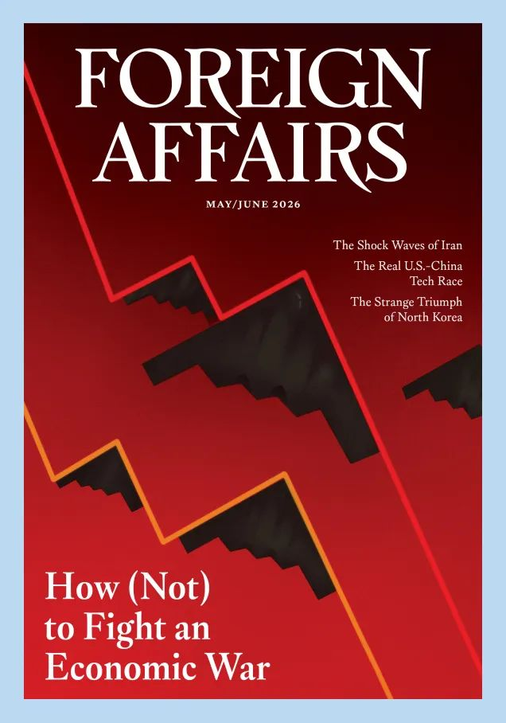
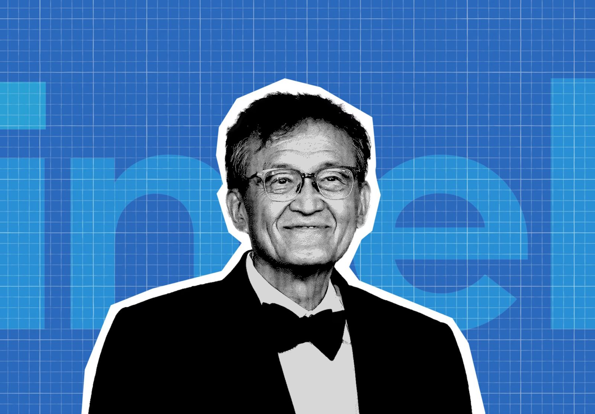

The S&P closed +0.55% on the week at 7,165.08. The Nasdaq added 1.5% to 24,836.60. Both closed at fresh records. Underneath, every risk we flagged last week got tested, and the surface absorbed them.
Brent ran to an intraday high near $107 Friday morning, on track for an 18% weekly gain, before reversing on Pakistan-mediated talk hopes. It closed at $105.33. WTI settled at $94.40. On a weekly basis, this is roughly a 14% increase for both, with Iranian Foreign Minister Araghchi bound for Islamabad and Witkoff and Kushner heading there Saturday. The VIX touched 20 on Tuesday and closed Friday at 18.84. Iran attacked three commercial ships in Hormuz on Wednesday. ServiceNow lost 18% in a single session Thursday. Intel printed +23.65% on Friday. The S&P moved 7,109 to 7,064 to 7,138 to 7,108 to 7,165 across five sessions. The week was net-flat in the most expensive way possible.

The Hormuz cushion got priced
Stocks slipped on Monday after tensions between the U.S. and Iran escalated over the weekend. The S&P 500 shed 0.24% to close at 7,109.14. The Nasdaq Composite declined 0.26% to 24,404.39, snapping its 13-day winning streak, the longest in over a decade. The U.S. Navy seized an Iranian-flagged cargo ship near Hormuz on Sunday. WTI ran up nearly 6%. Tuesday extended the slide as reports surfaced that Vice President JD Vance's trip to Islamabad had been paused over a lack of commitment from Tehran. The S&P closed -0.63% at 7,064.01, the week's low.

Wednesday opened on Trump's overnight ceasefire extension and held the bid through Iran's attack on three commercial ships in Hormuz that same morning, with the U.S. naval blockade still in force. The S&P added 1.05% to a fresh record close of 7,137.90. The Nasdaq added 1.64% to 24,657.57. Thursday gave it back as Brent pushed past $106 and the software complex cracked. Friday closed the round trip on talk hopes, with U.S. special envoy Steve Witkoff and Jared Kushner set to travel to Islamabad Saturday.
The VIX never closed above 20. The S&P never tested the 7,022 prior ATH breakout level the technical desks were watching. The cushion held. But oil ran 14-15% on the week and the implied correlation across energy, defense, and shipping repriced. The geopolitical premium we said had left the curve last week reentered it Monday and never fully left.
Semis carry, software cracks

The week's defining trade was dispersion. Semiconductor stocks led the rally, with notable gains from Intel, Advanced Micro Devices, and Arm Holdings on AI demand. The SOX printed its 18th consecutive green session Friday, the longest streak in years for the index. Intel surged 23.65% to a record $82.57 and was the best performer on the S&P, following a better-than-expected Q2 revenue forecast. Nvidia retook the $5 trillion market cap. AMD added 13.9%.
Intel's boom was the cleanest beat in the cycle. EPS $0.29 adjusted vs. $0.02 expected. Revenue $13.58B vs $12.41B. Q2 guide $13.8-14.8B vs $13.07B consensus. AI-related names now represent 60% of revenue and grew 40% year over year. The same structure that dented ASML and TSMC last week (strong print, raised guide, stock down) flipped on Intel.
Texas Instruments printed Q1 revenue of $4.83B vs $4.52B expected, EPS $1.68 vs $1.36, with data center revenue up 90% year over year. The stock had its best day since 2000 on Thursday, +19.4%.
Software cracked Thursday on ServiceNow and IBM. ServiceNow closed -17.75%, IBM -8.25%, and the wreckage spread across the complex: Workday -9.42%, Salesforce -8.75%, HubSpot -7.76%, Adobe -6.62%, Intuit -6.21%, Oracle -5.98%, IGV -5.83%. Both NOW and IBM beat consensus. ServiceNow held guidance and cited Iran war drag. IBM beat but maintained its 2026 guidance. Maintained guidance is no longer enough. The Mythos overhang from earlier in the month is still on the tape, and ServiceNow's print converted that overhang from a sentiment trade into a fundamentals one.
Vol moved but didn't break
The VIX touched 20 intraday Tuesday on Iran headlines, closed 19.31 Thursday, and settled 18.84 Friday. Realized vol picked up sharply across single names while the index held a roughly 1.5% range from Tuesday's 7,064 low to Friday's 7,165 close. The dispersion regime sharpened: SOXX +11% on the week while IGV finished slightly negative, defensive sectors lagged a record-high tape, and 5 of 11 S&P sectors closed lower.
The compensation for selling index variance is still poor. The compensation for selling single-name variance widened materially in the software complex Thursday afternoon. IGV bounced only 1.95% Friday, holding at the 50-day moving average rather than ripping back. The vol pop in software didn't mean-revert the way last week's NET shock did.
Our trades this week
Last week’s positioning played out largely as expected. We focused on harvesting volatility premium while staying aligned with underlying structural trends, particularly in semiconductors and gold.
On the single name side, we closed our short put exposure in NVIDIA, rolling from the 170 strike into a higher 190 strike as price action and sector momentum improved. The adjustment reflects a simple view: we remain structurally bullish on semiconductors, and last week’s price strength confirmed that bias.
We also initiated and quickly monetised a bull put spread in Micron Technology. The trade was driven by improving sentiment across the semiconductor complex, particularly in optical and memory-related segments. As the move materialised, we exited within two days, locking in gains rather than overstaying exposure.
In gold, we maintained a constructive stance. As market attention gradually shifted away from geopolitical escalation involving Iran and toward equity performance, downside pressure on gold appeared contained rather than accelerating. This created a favourable setup for premium-selling structures. We expressed this view through put spreads, adding exposure during brief periods of geopolitical stress while maintaining a medium-term bullish bias.
One of the more tactical trades last week was a call butterfly in Microsoft (425/430/435). The idea was to position for price pinning around the 430 strike, driven by dealer gamma dynamics. Into midweek, a combination of renewed geopolitical noise and software-sector weakness pushed the stock lower. Price came close to the lower bound but ultimately missed the expected pin level, resulting in a controlled loss.
The trade itself reflects a recurring theme in our framework: gamma-driven positioning can create strong local “magnetic” effects, but these are conditional on stability. Once macro or flow shocks enter, those effects weaken quickly.
Finally, our position in Lumentum Holdings (LITE) was allowed to expire. Throughout most of the week, the stock traded around the 850 level, while our strike was set at 760, leaving the position comfortably out of the money.
Into Thursday, price accelerated sharply toward 900, further widening the distance to strike and effectively removing any residual risk.
Given this, we chose not to close the position early. Exiting would have meant giving up remaining premium with little risk left on the table. Instead, we held through expiry and captured the full payoff.
Looking ahead
Four things matter next week.
The FOMC decision lands Wednesday April 29, what should be Powell's last press conference as Chair before his term ends May 15. Kevin Warsh's confirmation hearing Tuesday April 21 ran hawkish on inflation independence. If Powell echoes that line and the dot plot for late-2026 cuts gets pulled forward, the rate-sensitive complex repositions.
Mag-7 earnings hit the same evening. Microsoft, Alphabet, Meta, and Amazon all report after Wednesday's close. The tape will read Powell first, then the prints. What matters across the four is hyperscaler capex guidance for FY26 and FY27. Above whisper and the Vera Rubin, HBM4, and optical chain re-rate again. Below whisper from any one of them and the dispersion regime breaks the other way.
Thursday's chip tape is the cross-current. Qualcomm prints Wednesday after the close, Apple and SanDisk on Thursday. SNDK is our open position, with the earnings IV pickup as the cost of holding through the Nasdaq 100 inclusion bid. Apple feeds the Mag-7 capex read. Qualcomm sets the handset cycle going into AMD and Lumentum the week after.
Thursday morning also brings Q1 GDP and March PCE in the same 8:30 ET print. Core PCE last printed at 2.7%, above the Fed's 2% target. Two things make this reading harder: oil near $100 passed through to consumer energy costs during the survey period, and tariff-driven goods prices are reaching end consumers. A hot core PCE with soft Q1 GDP closes off the H2 cut path.
Saturday's talks in Islamabad set the geopolitical floor, if they happen at all in the format the White House described. Iran is publicly saying observations will only be conveyed through Pakistan. The market priced a resolution last week and got tested for it this week. The cushion has thinned each round.
Short premium remains hostile. We stay sized down, selective, and patient. The next vol event, hopefully, will reprice everything.